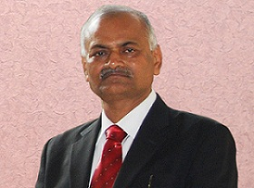

Dean Dr. T. P. Lahane
Ophthalmology
Speciality Ophthalmology
Education M. S. Ophthalmology
|
Dean Dr. T. P. Lahane
Dr. Tatyarao Pundlikrao Lahane is a renowned eye surgeon, recognized both for his mastery of
sophisticated techniques in eye surgery and for his pioneering community work in ophthalmology in rural
and tribal areas of Maharashtra. He has performed more than 1,41,000 cataract surgeries successfully and
treated more than 10 lakh patients so far.
Born in 1957 as a poor farmer's son in a small village Makegaon in Latur district of Maharashtra, Dr.
Tatyarao Pundlikrao Lahane educated himself under the scheme 'Earn while you learn' and graduated in the
field of Medicine from Marathwada University, Aurangabad in 1981. He obtained his surgical training and
passed the Master of Surgery degree in Ophthalmology from the same University in 1985. He conducted
numerous cataract surgery camps in rural Maharashtra while serving as a Lecturer and subsequently as an
Associate Professor at the Rural Medical College, Ambejogai. Failing kidneys and deteriorating health
brought him to Mumbai in 1994 where he joined work as Professor and Head of the Department of
Ophthalmology at the Sir J.J. Group of Hospitals and Grant Medical College. His single-handed
dedication, determination and hard work has made the Department of Ophthalmology, Sir J. J. Group of
Hospitals the most advanced tertiary Eye Care Centre in Maharashtra today. In spite of being on life
support medicines after his kidney transplant in 1995 he continues to work 12 to 14 hours a day,
performing state of art surgeries like phacoemulsification, sutureless cataract surgery, keratoplasty,
all types of lasers, paediatric surgery and cancer surgery, totally free for poor patients.
Dr. Lahane's contribution also includes pioneering activities in community ophthalmology, which are not
part of his duties, in the Medical College but done as social work, in his off duty time. He is the
pioneer of advanced phacoemulsification and stitch-less surgeries in eye camps in rural Maharashtra. He
has conducted 120 such camps, all over Maharashtra including 196 camps in tribal areas. He is the
pioneer of such advanced cataract surgeries in leprosy patients. Since the year 2000, he has operated
1491 leprosy patients with complicated cataracts in Hon. Baba Amte's Anandvan Ashram, reducing the
complication rate from 35% to less than 1%. He has restored vision to hundreds of blind children and
adults by successful corneal transplants.
Dr Lahane embodies the rare combination of surgical brilliance and humanitarian inclination. His eye
camp surgical patients travel many miles to queue up for 'Lahane baba's' camps in the base hospitals;
such is their faith in his ability to restore their vision. He has conducted live surgical workshops and
Instruction courses in advanced surgical techniques all over India. He has more than 200 presentations
in National Conferences. Through public lectures, newspaper articles and electronic media he has
campaigned to create awareness for Eye Donation. He is the Associate Editor of Indian Journal of
Ophthalmology, an Index Journal, member of Academic Council of Maharashtra University of Health Sciences
and President of the Bombay Ophthalmologists' Association (BOA) and Maharashtra Ophthalmological Society
(MOS). Bombay Ophgthalmologists' Association and Maharashtra Ophthalmological Society are two major
Associations in India with more than 1500 members, working towards the goal of blindness control and
prevention. He is a member of Management Council of Maharashtra University of Health Services.
Dr. Lahane has received numerous awards for his contributions to scientific knowledge and for his vast
social work. These include 'Best Professor Award', 'Athavale Award', 'Marathwada Gaurav Puraskar',
'Karveer Jeevan Gaurav Puraskar', 'Gold medal for Best Community Services', 'Utkrushta Karyakarta
Puraskar', 'Samajik Krutadnyata Puraskar', 'Lokmat Marathwada Gaurav Puraskar', 'Latur Gaurav Puraskar',
'Dr. Mulay Memorial Oration award', 'Dr. Daljit Singh gold medal', 'Lifetime achievement award',
'Giant's International Award', 'Best Doctor Award',and many more. Hon. Chief Minister of Maharashtra
felicitated him in August 2007 for the feat of performing 1,41,000 cataract surgeries. Zee TV "Ananya
Sanman 2008". He was awarded "Drushticon Award" by Uttar Pradesh Ophthalmic Society in the 23rd Annual
Conference. He was felicitated with "Nashik Nagari Satkar" by great Social Worker Mr. Anna Hajare.
Felicitated with "Lokmat Gaurav" puraskar on 9th January 2008. Felicitated with 'Padmashri' award for
the year 2008. Hon. Mayor of Mumbai has felicitated him with 'Nagari Satkar'.
He is presently handling the charge of Dean of Sir J. J. Group of Hospitals, without affecting number of
eye surgeries in the Department of Ophthalmology.
|